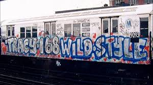

Le Rap est né aux Etat Unis et il fut inspiré par plusieurs disciplines comme le DJ-ing, le Beatboxing, le Break et le Graff.
A l'époque, on pouvait observer une grande pauvreté des peuples afro-américain.
KOOL HERK était un dj de New York et il est le premier à avoir eu idée d'utiliser deux disques sur une platine pour pouvoir enchainer les « breaks » dans une musique.
Il est à l’origine des « block party » qui sont des soirées improvisées dans les rues de New York pour que tout le monde danse et s’amuse. Durant ces soirées, il y avait des battles de danse ce qui fit apparaitre les premières rivalités entre les quartiers. Suite à ça, le rap est né.
DJ Kool Herc Une block party
80's
Début des premières musiques et donc des premiers labels comme Tommy boy, Profil, Ded Jam...
Afrika Bambataa est un artiste qui fit avancer le rap en faisant le premiers rap conscient avec "the message" dont les paroles appellent à la paix et à la sagesse contre la violence des gangs aux USA.
Cela va faire naitre de nombreux rappeurs mais ils vont avoir de nombreux procès notamment à cause des droits d’auteurs mais aussi à cause de contenus trop explicites comme pour le célèbre rappeur ICE T
Suite à ça le rap devient plus grand publique comme avec MC Hammer-U "can’t touch this".
Cela va donc faire naitre une nouvelle vague de rappeurs (new school).
Ensuite, NWA va faire son apparission. C'est un groupe mythique du rap US, créé par Easy E qui crée son Label et fait émerger le gangsta rap.
90's
C’est donc le début d’un rap que l’on connait actuellement avec des rappeurs comme Snoop Dogg, Dr Dre, Eminem, Ice Cube, 50 cent… qui font des ventes de disques inédites.
2PAC va sortir du lot parmi tous ces nouveaux rappeurs mais après l’assassinat de celui-ci, de nouvelles rivalités vont naîtres entre la partie Est et Ouest des USA. Il devient alors légende et inégalable en terme de popularité.
Les nouveaux rappeurs vont donc se rattacher au rap de New York ou à celui de Los Angeles. Certains vont dominer le top chart américain comme le Wu Tang clan avec "Protect Ya Neck" par exemple. Celui-ci deviendra le premier groupe de musique aux USA à utiliser leur notoriété dans d’autres dommaines. Ainsi, ils créent un label, une marque de vêtement, de skateboard, ils ont ouvert un salon de beauté…
2000 à aujourd'hui
Suite à tout ça, une grosse expansion se fit sentir aux USA avec Lil Wayne qui a lancé de nombreux rappeurs comme Drake, Nicki Minaj...
Jay Z lui aussi a lancé son label et a lancé la carrière de Rihanna, Kanye West, DJ Khaled…
Suite à l’engouement du style Hip Hop aux USA, le phénomène fait le tour du monde et celui-ci se répend dans tous les pays.
Pour le rap francais, Booba qui a lancé son label en 2004 est le celui qui a lancé la plupart des rappeurs que nous connaissont aujourd’hui comme Niska, Koba La D…
De nos jours
Après plus de 30ans, le rap est plus qu’encré dans notre société car il influence de nombreuses choses comme notre langage ou encore notre style vestimentaire…